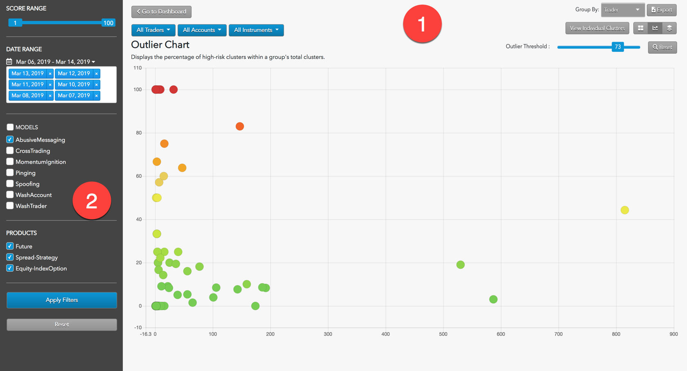
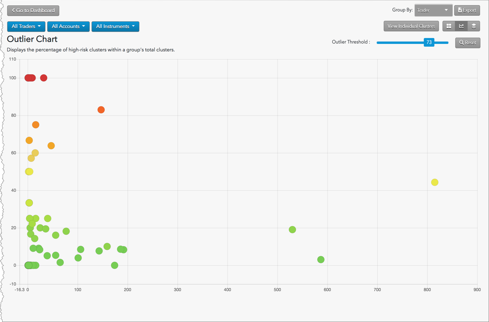
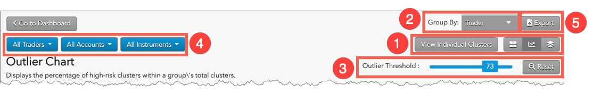

To allow for easy detection of problematic groups of clusters in big data sets with disparate customer or trader cluster volumes, the Outlier chart displays the percentage of high-risk clusters within an group's total clusters.
Outlier Chart display

The Outlier Chart display is organized into the following sections:
- Outlier Chart: Displays the Outlier view of the loaded data as well as filtering and navigation tools.
- Data Selection Panel: Manages the dates available to TT Score and specifies the criteria to use when populating the list.
Interpreting the Outlier Chart
The Outlier Chart displays every cluster group's percentage of clusters with a score above a threshold defined by the user. This allows for easy detection of problematic trading in big data sets with disparate customer or trader cluster volumes.

-
The color of the dot indicates the severity of the score, with low scores represented as dark green and becoming yellow and finally dark red as risk scores increase.
-
The position of a dot in the X-axis indicates the number of clusters contained in the dot.
-
The position of a dot in the Y-axis indicates the percentage of clusters that exceeded the score.
Outlier Chart navigation and filters

-
Select View: Switch between Individual Clusters, Heat Map, Outlier Chart, and Daily Cluster Groups views.
-
Group By: Sort the view by trader, account, and instrument.
-
Outlier threshold: Sets the minimum score to consider as high risk.
-
Cluster Filters: Filter the view by trader, account, and instrument.
-
Export: Exports filtered data into a .csv spreadsheet file.
Data Selection Panel
{% include content/data-selection-panel.html %}